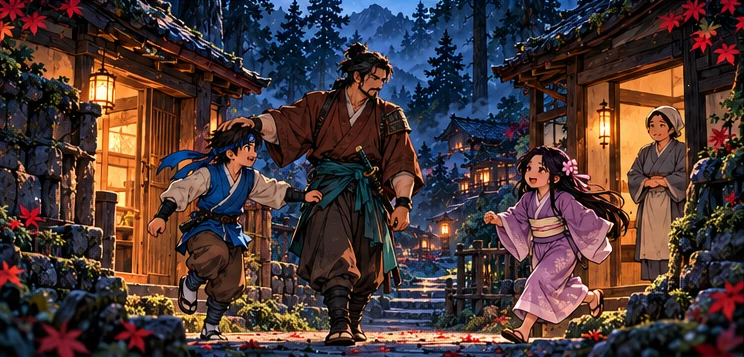

THE STORY
A life worth
protecting.
Before the blade, there was a promise.
- Title
- Cedar Shadows: Hana
- Developer
- RetroSoul Games
- Platform
- Android
- Genre
- Action-adventure
- Availability
- In Testing
Hidden deep in the cedar forest, Ren and Hana once knew a life worth protecting. Then the Ivory Order found them.
With Hana taken and the life they knew shattered, Ren follows a dangerous trail through forests, temples and snow. His promise will carry him forward — but his father’s lesson will guide his blade.
“Let protection guide your blade,
never hatred.”— Ren’s father · story concept
Cedar Shadows: Hana is currently in testing and is not publicly released. You can join the closed test using the three steps above.
See the game in motion Explore the story & characters
Illustrations reflect the supplied story direction. Story presentation is being developed; these are not gameplay screenshots.
FROM THE GAME
A world that moves with you.
18 seconds of real Android gameplay · silent excerpt · recorded test build, 22 October 2026.
Leap between platforms and fight enemy ninjas in a layered bamboo forest. Test-build visuals may change.


Actual gameplay captures from the supplied recording. Select a frame to enlarge.